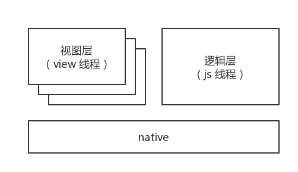
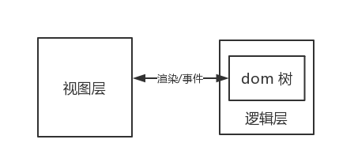
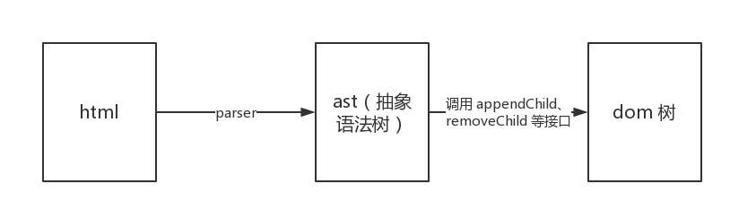

一次在微信小程序里跑 h5 页面的尝试
前言
标题看起来有点唬人，在微信小程序里跑 h5 页面，不会又是说使用 web-view 组件来搞吧？确实，使用 web-view 组件可以达到跑 h5 页面的要求，但是 web-view 组件在使用上还是有一些限制：不支持个人类型与海外类型的小程序、不支持全屏、页面与小程序通信不方便、很多小程序接口无法直接调用等。
那么，还有其他的法子么？此处先给答案，有的。
运行环境
h5 页面是运行在 web 环境下，小程序本身也是基于 web 的，那为什么一直没有办法让 h5 在小程序里直接运行呢？原因在于小程序特有的运行环境。
以一个小程序的页面为例，通常一个小程序的页面至少包含三个文件：wxss 文件、 wxml 文件和 js 文件。其中 wxml 文件和 wxss 文件组成了页面的视图层，js 文件则属于页面的逻辑层，在小程序中，视图层和逻辑层是在不同的线程中执行的。小程序里所有页面的逻辑层都在一个 js 线程中运行，而视图层则分别在不同的 view 线程中。通常一个页面对应一个 view 线程，为了对性能的控制，不会允许用户无节制的启动 view 线程，所以也就有了页面栈数量的限制（目前最多允许打开十层页面）。

在 view 线程中是有类似浏览器一样的环境，但是只有页面的视图层在上面跑，页面的渲染完全基于另一个 js 线程传输过来的数据。js 线程是一个纯净的 js 环境，那些你想要调的 document.getElementById、location.href 等 dom/bom 接口通通都没有，你只能在这里执行 js 代码，调用官方提供的接口，而页面的逻辑层就是在这样的线程中跑。这样问题就出来了，页面会渲染成什么样子，完全基于初始模板和数据，你想调接口来修改页面结构，门都没有～
方案制定
小程序的运行环境如此特殊，以至于它的开发模式也比较另类，但是还是有很多人希望能够将开发过程大一统，一份代码各端运行。那么在限制如此之大的情况下，要怎么做的？
现在市面上有一些基于 react 或 vue 搞出来的工具，它们要求你使用 react 或者 vue 来写页面，由构建工具来编译到各个环境上可运行的目标代码，因为 react 和 vue 本身是基于数据来驱动的组件化框架，在一定程度上限制开发者直接调用 dom/bom 接口，所以可以比较方便的实现代码的编译转化。
PS：因为小程序本身的限制，react 和 vue 的小部分功能也是无法做到完全兼容的，不过大部分的实现都是 OK 的。
不过这不是我想要的，因为它们虽然实现得很漂亮，但是仍有不小的开发局限，你必须选择 vue、react 等框架的其中一种来使用。我想要的是更原生、更底层的大一统方案，底层到除了 vue、react 之外，你甚至可以在小程序中使用 jQuery。
目标太大会扯着蛋，至少得先有一个思路才行。
回到先前提到，小程序的逻辑层是在一个纯净的 js 线程中跑，那里没有 dom/bom 接口，只能运行页面逻辑层的代码，那么我们想办法在逻辑层建一棵 dom 树，把基本的 dom/bom 接口都模拟出来不就行了么？

乍一想好像可以，但是这里隐藏着一个问题：逻辑层中 dom 树的变更要如何转变成数据并更新到视图层呢？
这里很重要的一点：小程序提供了自定义组件，并且支持递归引用。也就是说，我们可以将 h5 中的 div、span、ul 等 dom 节点转成自定义组件，逻辑层里的每个 dom 节点都会对应一个视图层中的自定义组件实例，节点更新了，我们找到对应的自定义组件实例进行更新即可。
开始实施
方案很简单，但是实现起来的话细节和坑特别多，下面且听我挑几个关键的 trick 来介绍：
dom 树的模拟
想要在小程序的逻辑层模拟出一个 dom 树，本质上和建立一棵虚拟树类似，因为它并不是真实的 dom 树。整个流程简单来说是这样的：

不管是页面中的静态 html 内容还是使用 innerHTML 等接口动态插入的 html 内容都可以走上面的流程来进行 dom 树的创建。dom 树创建比较简单，只是细节比较多，此处的问题是建立好的 dom 树要如何渲染到视图层呢？上面提到了一个关键点：将 dom 节点转成小程序的自定义组件。
此处再重复一次表强调：小程序的自定义组件支持递归引用！
什么叫递归引用？感觉用文字表达不如直接用代码说明来的快，我们先直接编写一个名为 element 的自定义组件：
// element.js
Component({
data: {
children: ['div', 'span'],
}
})
<!-- element.wxml -->
<block wx:for="{{children}}">
<div wx:if="{{item === 'div'}}"></div>
<span wx:elif="{{item === 'span'}}"></span>
</block>
{
component: true,
usingComponents: {
"div": "./element",
"span": "./element"
}
}
看代码应该很容易就能明白，所谓递归引用就是自己可以作为自己的一个子组件使用，这样可以很方便地将 dom 树给渲染在逻辑层，并且也不需要我们为每种节点标签给编写一个自定义组件，如上述例子，只需要编写一个 element 自定义组件基本可以覆盖所有标签。
同样，根据上述例子可以很明显的看出，每个节点只负责渲染自己的子节点，其他如孙子节点等后代节点一概不管，这样就避免了在更新时需要将整棵树结构传递给视图层的麻烦问题。
对于从逻辑层向视图层传递数据，小程序里有个数据包大小的限制，此处若同步整棵树结构，一来可能爆了这个限制，二来会传递很多无用数据，增大更新开销。
建立联系
创建好 dom 树后，下一步就是要想办法将小程序创建的自定义组件实例和我们创建的 dom 节点给一一联系起来。首先，我们得给每个 dom 节点生成一个节点 id 用于区分，根节点的节点 id 可以在构建过程中直接生成，假定根节点就是 body 节点，那么生成的页面的 wxml 和 json 中大概是这样的：
<!-- page.wxml -->
<body data-private-node-id="node-id-xxxxxx"></body>
{
usingComponents: {
"body": "../components/element",
}
}
body 节点同样是用上面例子中的 element 自定义组件来渲染，修改下 element 自定义组件的 js 文件：
// element.js
Component({
data: {
children: [].
},
attached() {
const nodeId = this.dataset.privateNodeId // 节点 id
}
})
如上述代码所述，在自定义组件的 attached 生命周期中即可拿到节点 id，然后根据此节点 id 从 dom 树中找到对应的 dom 节点，两者之间即可建立关系。
找到根节点后，后续节点就好办了。根节点对应的自定义组件实例在和 dom 节点建立联系后，就可以通过 dom 节点拿到子节点列表，进而开始渲染子节点。 由上可知，每个节点只负责渲染自己的子节点，每个节点的渲染流程都和根节点一样：
- 拿到节点 id
- 和 dom 节点建立联系
- 通过 dom 节点拿到子节点列表
- 渲染子节点
根据这个逻辑修改一下上述例子中的 element 自定义组件的代码：
// element.js
Component({
data: {
children: [].
},
attached() {
const nodeId = this.dataset.privateNodeId // 节点 id
const domNode = getDomNode(nodeId) // 根据节点 id 找到 dom 节点
const children = domNode.children // 拿到子节点列表
// 渲染子节点
this.setData({
children,
})
}
})
<!-- element.wxml -->
<block wx:for="{{children}}">
<div wx:if="{{item.tagName === 'DIV'}}" data-private-node-id="{{item.nodeId}}"></div>
<span wx:elif="{{item.tagName === 'SPAN'}}" data-private-node-id="{{item.nodeId}}"></span>
</block>
如此递归下去，即可将自定义组件实例和 dom 节点一一联系起来，同时将整棵 dom 树渲染出来。
渲染信息的同步
假若逻辑层想要获取视图层的渲染信息，比如调 getComputedStyle 接口获取节点样式、使用 clientWidth 或取节点宽度等，因为逻辑层本身只是模拟了 dom 树，并没有实现布局和渲染的模拟（理论上可以实现，只是开销巨大，而且很难与小程序本身环境的渲染结果对齐），所以这块实现起来很头疼。
目前的方案上使用小程序的 selectorQuery 接口来拉取渲染信息，因为此接口只能异步拉取，所以没法完整模拟渲染信息的即时同步。为了尽可能做到相对同步，在初始渲染完成后尝试拉取一次渲染信息，之后在每次触发节点更新后再异步拉取渲染信息，同时提供一个异步接口给某些需要即时拉取渲染信息的场景中使用。
全局对象的处理
上面提到小程序的逻辑层是跑在一个 js 线程中，这个 js 线程是一个纯净的 js 线程，别说那些 bom、dom 接口了，连一个正经的全局对象都没有。
小程序中其实有 global 对象，但是和我们熟悉的 nodejs 中的 global 对象实现不一样，所以此处按下不提。
做前端开发的同学们应该都知道，h5 环境中声明在全局的变量/函数会挂在 window 下，在页面的其他地方是可以使用或者是通过 window.xxx 的方式来访问的。在小程序的运行环境中这些是不存在的，那就意味着会有下述这些问题：
// a.js
function xxx() {}
window.yyy = function() {}
// b.js
window.xxx() // 报 xxx 不存在
yyy() // 报 yyy 不存在
这个问题很严重，要知道我们很多时候访问一些对象都会忽略掉 window. 这个前缀，比如使用 location 对象的时候。也就是说，必须对这些 js 做一遍后处理，强制将全局函数挂在 window 下，强制通过使用 window.xxx 的方式访问全局变量/函数。经过后处理后，上述例子会变成下面这样：
// a.js
function xxx() {}
window.yyy = function() {}
window.xxx = xxx // 强制挂在 window 下
// b.js
window.xxx() // 正常执行
window.yyy() // 强制补充 window 前缀，正常执行
嗯，完美解决！
其他
上面提到的是整体的实现框架，也简单的提到几个坑。当然，这只不过是冰山一角，事实上需要兼容的坑、无法按照标准实现的接口和完全无法实现的特性犹如满天星，数都数不清，幸运的是我们并不完全依赖到所有的接口，有些时候我们仅仅需要用到像 querySelector、事件系统、异步请求等接口就可以构造出我们需要的 h5 页面，而这些大多是能做到兼容的，所以也不用特别担心此方案能不能应用在实际开发中。
工具试用
目前已有实现的差不多的构建工具，暂且命名为 h5-to-miniprogram，只看名字就知道这是个想干嘛的工具，有兴趣的同学也可以点击此处翻看源码，如果可以的话也欢迎来帮忙将此工具完善起来～